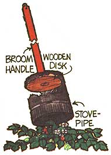

Mother's Bi-Monthly Almanac
Shoe care, an umbrella trellies, handling camp kettles, weaving a willow bracelet, wire boot scrapers, cleaning rugs, cutters for strawberry runners, painting tips.
By the Mother Earth News editors
May/June 1978
SHOE CARE
As nice weather again draws folks outdoors, participation in jogging, tennis, and other summertime sports automatically rises. Which means a rise in "fancy footwork" all across the nation . . . which, in turn, means that millions of sneakers and sports shoes will soon start to wear down (and probably just when they're really beginning to feel broken in and comfy).
If this happens to you, wait! There may be some miles left in that athletic footwear yet. Just trot on over to the local hardware store and pick up an electric glue gun and some sticks of adhesive (get glue sticks, not caulk). Then simply wipe the dirt from each worn down shoe sole, heat up a stick or two of glue, and apply a smooth, even coat of the adhesive over the damaged area (take care, of course, to keep the glue's surface level with the surface of the sole).
Let the built-up coating dry overnight . . . and, once again, you'll be all set to scamper about in your favorite "good as new" shoes . . . without the danger of ankle or knee problems caused by running on angled surfaces.
AN UMBRELLA TRELLIS
This idea may carry recycling to its extreme, but. . .
If you have a discarded umbrella hiding someplace in a closet, why not "plant" it in your flower or vegetable garden as a support for climbing vines? Simply remove the cloth from the frame and run a wire through the tip of each rib (wrapping it around each point once to hold the arches stationary and equally spaced apart). Then insert the handle in the ground with some climbing plant growing beneath it.
You could end up with a very attractive, functional, and unusual lawn decoration.
HANDLING CAMP KETTLES
The fastest way to spoil a camping trip is with an injury . . . especially a burn. So next time you need to remove a kettle from a campfire-and don't have sufficient hot pads to protect your hands-find a handy forked stick. Cut three notches into the branch as indicated in the drawing . . . then slip the tool underneath the handle and over the rim of the pot.
With this clever little device, you can easily maneuver any steaming pot and pour out its contents without once touching heated metal.
WEAVE A WILLOW BRACELET
Youngsters and adults alike will enjoy making-and wearing-these attractive willow bracelets. Though they won't last forever (the material dries out and eventually breaks apart), you can whip up replacement wrist or ankle jewelry in just minutes . . . at no cost . . . and with very little effort.
All you really need are two or three 4- to 5-foot-long leafless weeping willow twigs (or honeysuckle vines) that are flexible but still not too soft to hold their shape when worked into a bracelet. At the end of one branch, make a loop just large enough to fit over your hand (or foot). Then take the longer loose end and begin wrapping it over and around the original loop till you run out of material.
If you want a thicker bracelet, take a second (or third, or fourth) twig and again twist it over and around the bracelet either in the same-or in the opposite-direction. (There's no need to tie the new branch onto the old . . . it should be stiff enough to push outward against the circle and hold itself in place.) Finally, finish off the creation by tucking all loose end through gaps in the bracelet and trimming them off flush with the surface where they exit on the other side.
To make a number of different pieces of jewelry, either [1] change the direction of additional twigs as you weave them in, [2] remove the bark from the supple branches before weaving, and/or [3] shellac or paint the finished items. Variations are up to you!
A WIRE BOOT SCRAPER
Instead of traipsing soil indoors from your newly plowed garden, place a boot scraper or two in strategic spots around the homestead for quick cleanups.
Build a T-shaped support by nailing two boards together at right angles (see illustration) and cut four or five evenly spaced notches into the upper edge of the vertical piece. Now lay out four or five sturdy pieces of wire and use heavy-duty staples to attach them to one end of the base . . . thread the strands through the slots you've cut in the edge of the board . . . and fasten the wires to the other end of the horizontal plank while you pull 'em taut.
It's then quite easy to remove mud and dried dirt from shoes: lust draw your earth-caked soles across this dandy contraption and watch the mess fall off!
CLEANING RUGS
Next time your spring cleaning chores include beating a carpet, consider this trick for keeping the rug from wrinkling and sagging towards the middle of a clothesline.
Fasten a long pole to the line with a series of single hitches (see sketch). Your floor covering can then hang straight, as you-and the sun and the wind-execute your cleanup job.
CUTTER FOR STRAWBERRY RUNNERS
Every gardener knows that strawberry runners must be trimmed back or the plants will quickly overrun their share of garden space. The backbreaking chore, however, can be made much easier with this inexpensive do-it-yourself tool.
Attach a thick wooden disk to the end of an old broom handle . . . then nail a piece of stovepipe or a heavy metal can to the disk as shown in the sketch. As a last step, sharpen the edge of the cutter with a file.
Then, when the hollow cylinder is placed over the plant and pressed downward, it'll sever any runners that stick out beyond its radius. In a jiffy you'll have your bed shaped up and under control for the season!
PAINTING TIP
To keep watercolors from "crawling", add a few drops of ammonia, limewater, or a solution of sal soda to your paints.
MAY - JUNE
|
|
 |
|
|
|
|
|
|
|
 |
|
|
|
|
|